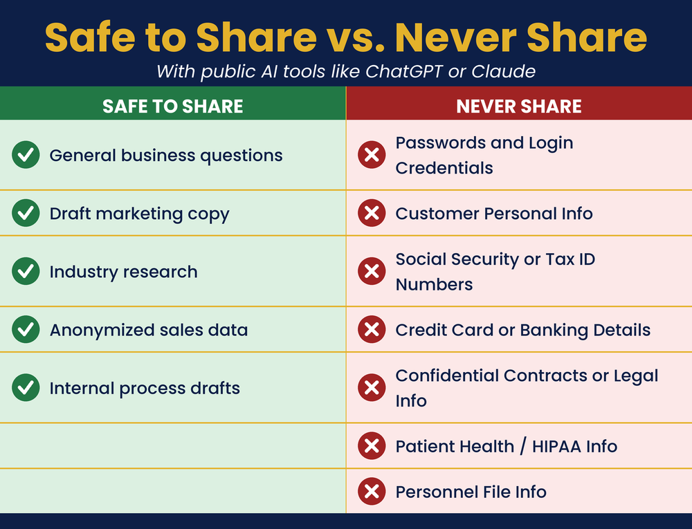

Know the Rules. Own the Game.
What do I need to know about my new AI employee?

AI is powerful, so use it with care. This chapter covers the rules that keep you safe. Learn what is okay to share and what to never type in. Turn off settings that train on your data. Know the basics of copyright and privacy. Always check AI’s facts before you trust them. If you have a team, set a simple AI policy. A little caution protects your business and your customers.
Note: These are starting points, not legal documents. Employment and contract law vary by place. Have any formal document reviewed by a qualified attorney before you use it.
1. The Whiteboard Test — a quick privacy gut-check
Would I write this on a public whiteboard? (If not, don’t paste it into AI.)
2. Draft an Employee AI Policy — one page; have an attorney review
You are an HR policy writer for small businesses. Draft a simple, one-page employee AI usage policy for a small business. Include sections covering: what AI platforms are permitted for work use, what types of information should never be entered into these platforms, guidelines for reviewing and editing AI-generated content before using it, and who to contact with questions. Make it clear and practical, not legalistic.
Do three things this week: (1) Find the privacy or data controls in your primary AI platform and turn off training data usage. (2) Write a list of the types of information you’ll never type into any of these platforms and post it near your computer. (3) If you have employees, use the prompt above to draft a simple AI usage policy and share it with your team.
Read the full chapter in AI Jiu-Jitsu → AJJbook.com
Prefer to have it set up for you? BreakThru Growth offers AI coaching and done-for-you setup for small businesses → BreakThruGrowth.com